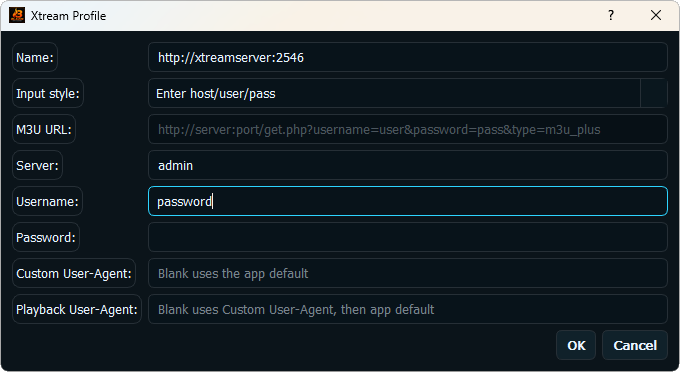

Dedicated login
Enter the server URL, username, and password issued for your legal source.
If your legal IPTV source supplies a server address, username, and password for Xtream Codes access, BLAZIN IPTV Player provides a dedicated Windows login workflow.
Windows IPTV workflow
Xtream Codes can organize Live TV, Movies, and Series and may include categories, EPG, logos, and posters. Availability is determined by your source; BLAZIN displays compatible data when it is supplied.

What BLAZIN supports
Enter the server URL, username, and password issued for your legal source.
Browse Live TV, Movies, and Series where your source exposes those sections.
Save a reusable profile and choose internal or external playback for your Windows setup.
7-day trial checklist
FAQ
No. BLAZIN is a player. You must supply your own legal Xtream Codes login.
No. EPG, logos, posters, categories, Movies, and Series depend on what your source provides.
Related guides
Review this focused guide and compare it with the source and Windows workflow you use.
Review this focused guide and compare it with the source and Windows workflow you use.
Review this focused guide and compare it with the source and Windows workflow you use.
Microsoft Store
Install the Windows app, add your own legal IPTV source, and test the supported workflow on your PC.
No channels, playlists, subscriptions, provider accounts, or copyrighted content are included.